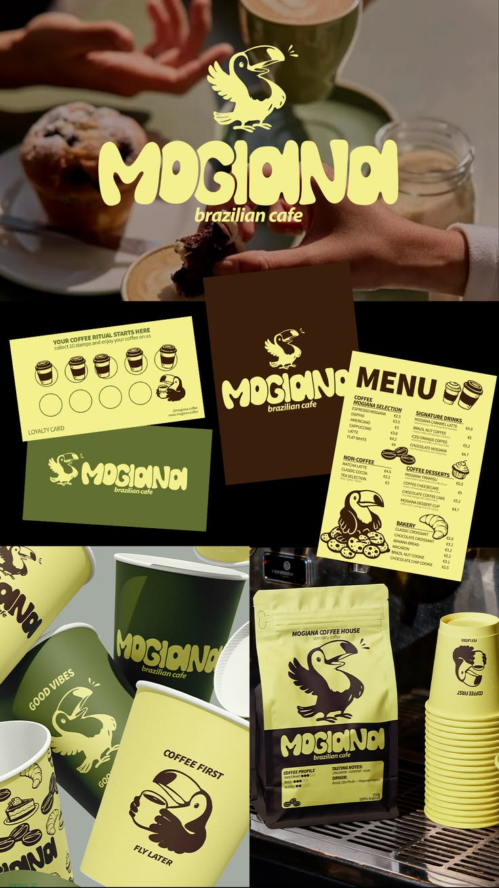
Nous portons des idées ambitieuses pour des marques ambitieuses. Cinq bureaux, un studio, réunis par optimisme, collaboration et artisanat. Trouvez-nous à Brazzaville, Abidjan, Dakar, Londres, et Berlin.
[Magazine]
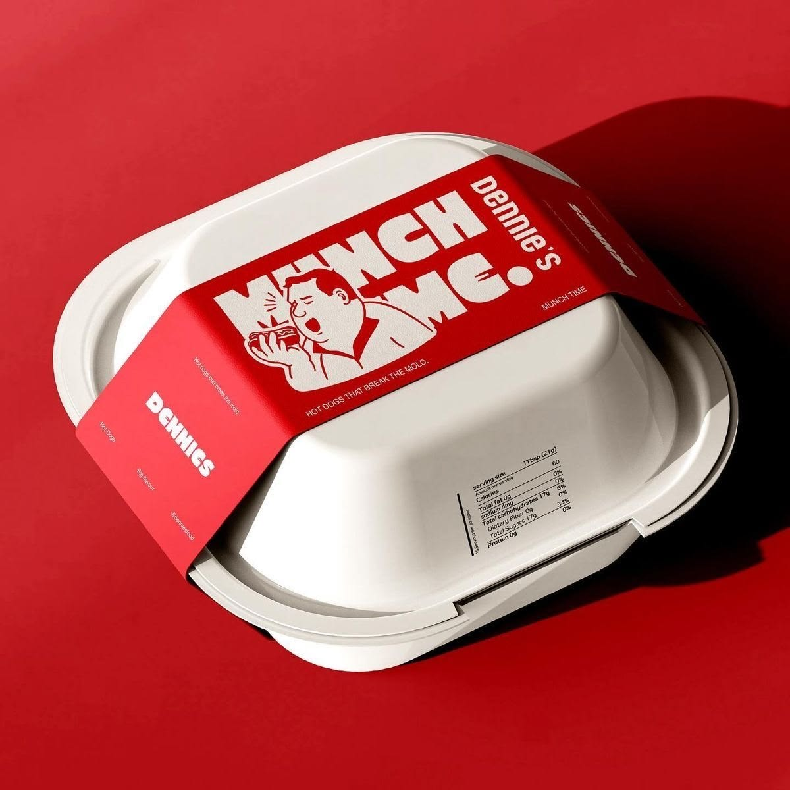
CE QUE L'ON CRÉE COMMENCE TOUJOURS PAR UNE ATTENTION SINCÈRE
Derrière chaque emballage se cache une décision de design. Ici, le carton devient support d'identité, la couleur devient signature, et le geste du quotidien se transforme en expérience de marque à part entière.
L'empathie façonne tout ce que nous créons, de la première impression au dernier détail.
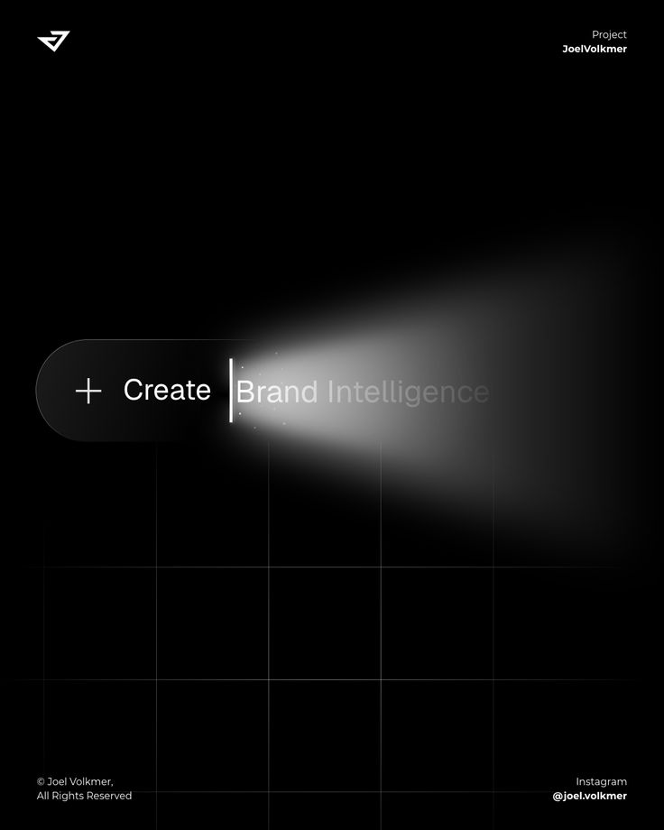
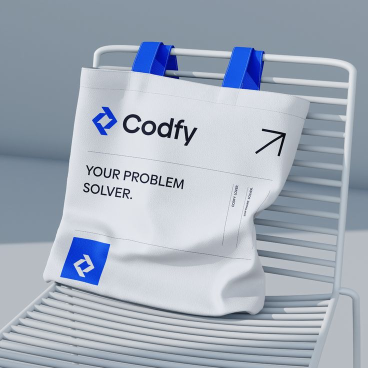
Deux cercles, une identité La sobriété comme signature, quand la forme suffit à raconter une marque.
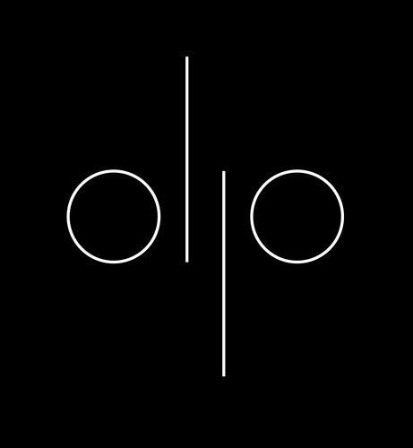
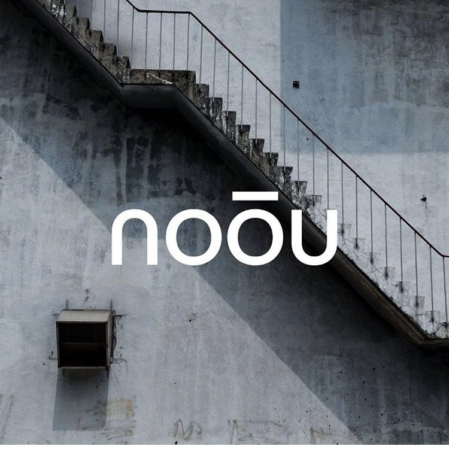
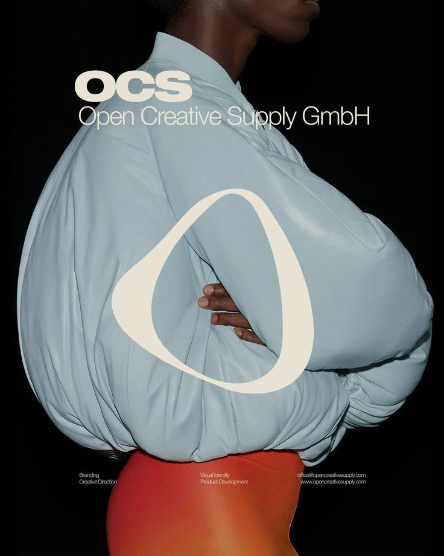
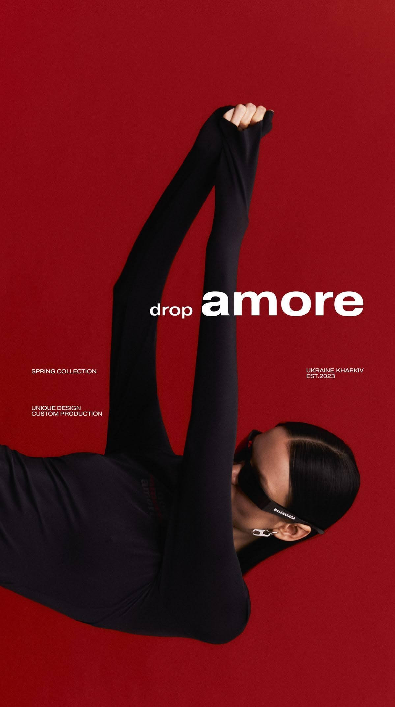
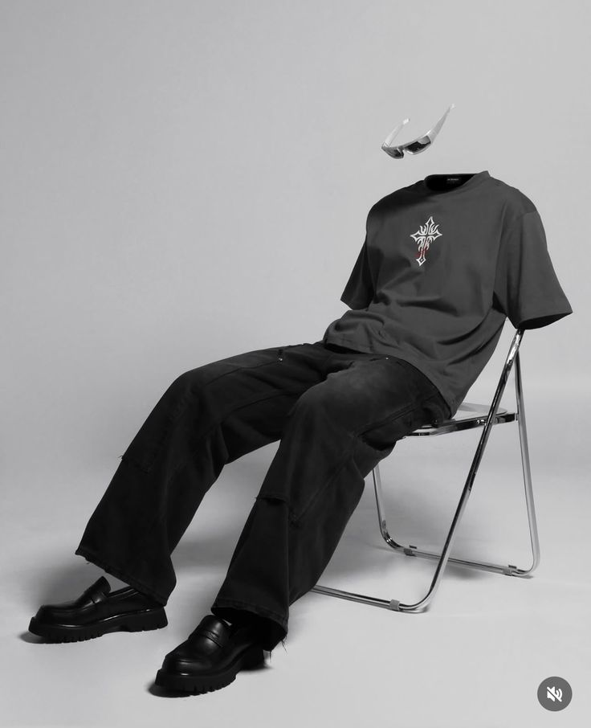
PROJETS À LA UNE

Sculptée comme un bijou. L'objet le plus banal devient soudain précieux.
GRAND PLAN
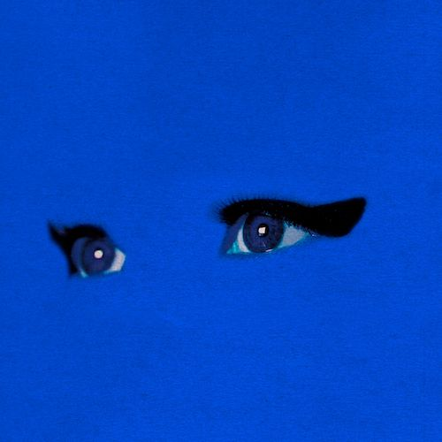
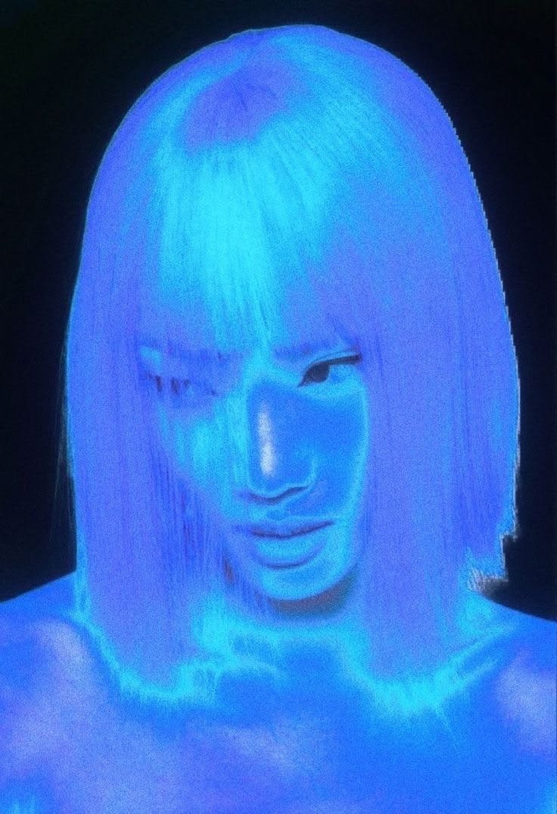
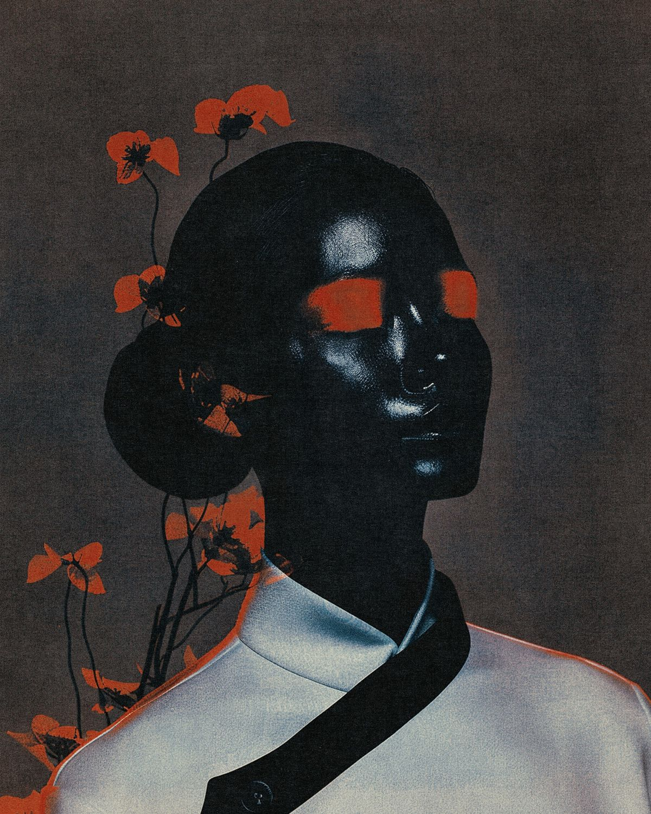